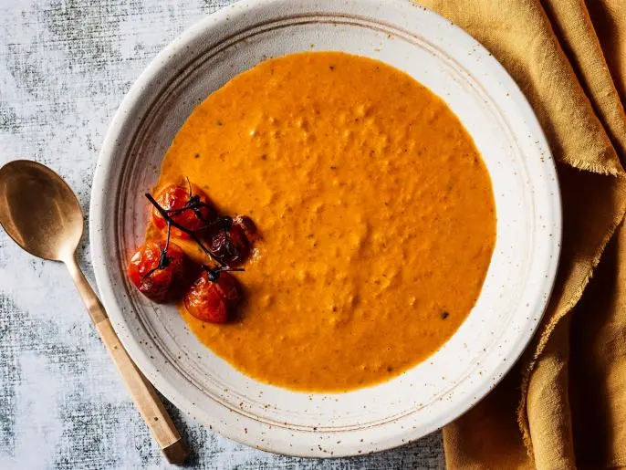

Roasted Tomato Soup

Description
It's roasted tomato soup, what else can I say?
Ingredients
- 2 1/2 pounds fresh tomatoes (mix of fresh heirlooms, cherry, vine and plum tomatoes
- 6 garlic cloves, peeled
- 2 small yellow onions, sliced
- vine cherry tomatoes for garnish, optional
- 1/2 cup extra-virgin olive oil
- salt and freshy ground black pepper
- 1 quart chicken stock
- 2 bay leaves
- 4 tablespoons butter
- 1/2 cup chopped fresh basil leaves, optional
- 3/4 cup heavy cream, optional
Steps
- Preheat oven to 450 degrees F.
- Wash, core and cut the tomatoes into halves. Spread the tomatoes, garlic cloves and onions onto a baking tray. If using vine cherry tomatoes for garnish, add them as well, leaving them whole and on the vine. Drizzle with 1/2 cup of olive oil and season with salt and pepper. Roast for 20 to 30 minutes, or until caramelized.
- Remove roasted tomatoes, garlic and onion from the oven and transfer to a large stock pot (set aside the roasted vine tomatoes for later). Add 3/4 of the chicken stock, bay leaves, and butter. Bring to a boil, reduce heat and simmer for 15 to 20 minutes or until liquid has reduced by a third.
- Wash and dry basil leaves, if using, and add to the pot. Remove the bay leaves before using an immersion blender to puree the soup until smooth. Return soup to low heat, add cream and adjust consistency with remaining chicken stock, if necessary. Season to taste with salt and freshly ground black pepper. Garnish in bowl with 3 or 4 roasted vine cherry tomatoes and a splash of heavy cream.
Home